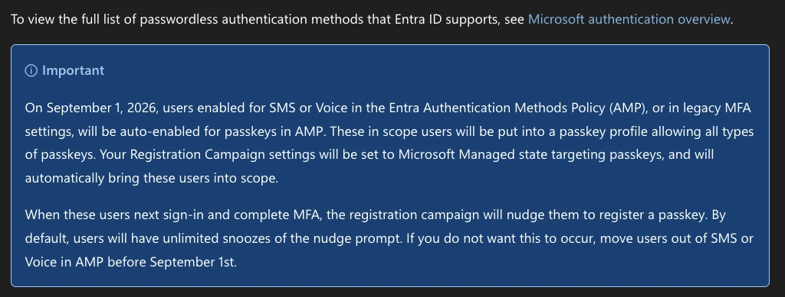

Authentication Methods · SMS and Voice Retirement · Part 2
Four weeks after September 1: the date change you should ignore, the passkey profile nobody asked for, the campaign that wouldn't stay disabled, and what bring-your-own telecom actually costs.
Entra ID · Passkeys · MSP · · · Jon Hope · Microsoft MVP · Security: Identity & Access
Originally published at conditionalaccess.tech
Section 01
Source: Retirement timeline · Choose a telephony provider · MC1426371 (Message Center)
In Part 1 I covered what's changing and how to find your SMS and Voice users. Since then, September 1 has landed in every tenant that didn't opt out, and the questions on my calls have changed. People have stopped asking what's happening. Now they want to know why something happened that they didn't expect.
Sep 1, 2026 Done Passkeys auto-enabled, campaign set to Microsoft managed
Oct 30, 2026 34 Telephony provider setup opens
Feb 1, 2027 128 Retirement for everyone else, internal guests included
Jul 1, 2027 278 Retirement for Global Admins and external users
Days remaining, calculated when the page loads.
Section 02
Source: Different date for Global Admins and external users · Manage emergency access accounts · Passkey support for B2B users
There's been one major change to who's impacted. Microsoft updated the retirement docs so that Global Administrators and external users keep Microsoft-provided SMS and Voice until July 1, 2027. Everyone else, internal guests included, still retires on February 1.
My guess is Microsoft wants to limit the support cases that come from admins and break-glass accounts still sitting on SMS or Voice. I get the reasoning. Please don't use it.
Your admins and break-glass accounts should be the first accounts you move, and the least disruptive. They're the people who understand what a passkey is.
Global Admins
Nobody in the tenant has a better reason to be on a phishing-resistant method. The extension also only names Global Administrators. The docs don't extend it to other privileged roles, so treat every other admin role as a February 1 account.
Break-glass
Microsoft's emergency access guidance recommends passkeys (FIDO2), or certificate-based authentication if you already run a PKI. A break-glass account that depends on someone's phone is out of line with Microsoft's own guidance, retirement or not.
Guests
Passkey support for B2B and internal guest users is planned for the end of calendar year 2026 (MC1459133). Internal guests still retire on February 1, which leaves a thin window between "passkeys work for guests" and "SMS stops working for them."
Section 03
Source: Move users to passkeys · Passkey nudge evaluation by platform
This is the problem I've seen most: admins who didn't realize their users were in scope for the push, because passkeys were already enabled in the tenant. This is the note from Microsoft that everyone's working from, and it's been as clear as mud.

From Passkeys by default and retirement of Microsoft-provided SMS and voice authentication , Microsoft Learn.
Read it slowly and you'll find three ways into scope that people miss:
1
Scope is "enabled for SMS or Voice", not "uses SMS or Voice"That includes users enabled through legacy MFA settings, not only the Authentication Methods Policy. Having passkeys enabled elsewhere in the tenant doesn't take anyone out of scope.
2
The Microsoft managed passkey campaign triggers after any MFA methodThe Authenticator campaign only fires after SMS or Voice MFA. The passkey campaign fires after any MFA method, so a user who signs in with Authenticator push can still get nudged.
3
The nudge is evaluated per OS and browserIt checks whether the user has a passkey usable on this device and browser, not whether one is registered on the account. Windows Hello for Business stops the nudge on Windows. The same user gets nudged on their iPhone or Mac.
Section 04
Source: Users scoped to multiple passkey profiles · Passkey profiles and attestation · Types of passkeys
In-scope users were put into a passkey profile that allows all types of passkeys. On its own that sounds harmless. Combine it with how Entra evaluates multiple profiles and you get a configuration nobody chose.
🛑 How multiple profiles combine: When a user is scoped to more than one passkey profile, Entra allows registration and sign-in if the passkey satisfies at least one of them. So if you built a device-bound, attestation-enforced profile for your admins, and those admins were also enabled for SMS, the all-types profile now lets them register synced passkeys and unattested device-bound passkeys too.
It gets harder to undo. Attestation is only checked at registration time, so turning enforcement back on later doesn't block passkeys that were already registered without it. You have to find those passkeys and delete them.
For perspective: a synced passkey is still far less of a security concern than SMS, in my opinion. Microsoft's own guidance calls any passkey a significant upgrade over phishable MFA. What worries me is the unintended configuration. You designed a policy, and a migration quietly widened it.
Section 05
Source: Campaign set to Microsoft managed · Choose a campaign state · Temporary opt-out
The other issue I keep seeing: tenants that had the registration campaign set to Disabled and still got nudges. The wording explains it. On September 1, Microsoft sets Registration Campaign settings to Microsoft managed, targeting passkeys. The docs don't carve out tenants that had it disabled, and the reports I've seen line up with that.
| What you want | What actually works | Status |
|---|---|---|
| Stop the automatic changes | Set passkeyDynamicMigration to true (covered in Part 1). Temporary, ends February 1, 2027. | Beta API |
| Take users out of scope | Move them off SMS and Voice in the Authentication Methods Policy and legacy MFA settings. | Documented |
| Control snoozes yourself | Switch the campaign from Microsoft managed to Enabled. Microsoft managed locks the snooze settings. | Documented |
⚠️ Moving target: Microsoft's registration campaign article says a new version of the campaign is rolling out, expected to finish by the end of September 2026. Until it reaches your tenant, what you see in the portal might not match the docs.
Section 06
Source: Threatscape: Map out the passkey registration campaign · Jan Bakker: Campaign simulator · Run a registration campaign
The nudge logic depends on campaign state, targeted method, passkey profile, OS, browser, and which MFA method the user just used. That's too many variables to reason about in your head across a stack of customer tenants. Two people in the community built the answer.
Ru Campbell and Threatscape put together an excellent walkthrough on mapping out the passkey registration campaign, so you can work out whether a user will be in scope for a nudge.
Video not loading? Watch it on YouTube.
nudge.janbakker.tech
Jan Bakker went above and beyond and built a what-if tool for exactly this. Set the campaign state, targeted method, OS, browser, the MFA method used at sign-in, the local passkeys on that platform, and the passkey profile type. It returns a yes or no verdict with a reason trace showing which check decided it.
It also models the things that suppress a nudge: an existing SSO session, a Conditional Access policy blocking Register security information, a terms of use screen, and custom controls. Those match Microsoft's own FAQ, and they're what explain the "why did this user never see it?" tickets.
Section 07
Source: MC1426371 (Message Center) · Telesign Verify for Microsoft Entra · Soprano per user · Soprano per transaction · Telesign verification pricing · Telephony providers FAQ: costs
Make sure you're checking the store. Microsoft's Message Center post set September 18 as the date provider information would be available, and the initial providers, Telesign and Soprano, have their listings up with pricing. You can't configure them in Entra until October 30, and Microsoft recommends finishing setup at least 4 weeks before February 1. That makes January 4, 2027 your real deadline, so price the options out with customers now.
| Offer | Model | Price | What you get |
|---|---|---|---|
| Soprano per user | Per enabled user | $3.00 / user / month 1-year term, $36 / user | 10-user minimum. First month free: the 30-day trial covers up to 10 users and 100 messages. SMS, Voice, WhatsApp, Viber, RCS. |
| Soprano per transaction | Pay per message | $0 upfront $0.008 to $0.38 per SMS | Billed by destination country band. List prices apply under 10K messages a month. Some countries require Sender ID registration, which can cost extra. |
| Telesign trial | Private preview | $0 | $20 of free consumption. |
| Telesign Basic Bundle | Prepaid | $250 one-time | $250 of SMS and Voice consumption, plus Basic support. |
| Telesign Pay As You Go | Support tier + usage | $500 / $1,500 / $5,000 Starter / Advanced / Premier | Support plan price, no monthly minimum. Messages and calls billed at per-destination rates. US SMS Verify: $0.0095 per message. Voice Verify: priced through sales. |
Soprano publishes rates by country band but doesn't list which countries sit in which band, so ask them for yours. Telesign's listing links to its public per-country pricing, where SMS Verify to US numbers is $0.0095. Voice is charted separately because it's priced per minute, and it's the number that should make you move voice users first.
SMS OTP, price per message (USD) Soprano bandTelesign, US destinations
Voice OTP, price per minute (USD) Soprano band
Soprano's top voice rate, $8.00 a minute, is 21 times its top SMS rate. Telesign doesn't publish voice rates.
Plug in one customer's SMS holdouts. You're charged per MFA prompt that sends a code, not per sign-in, so for most users this is well under one a day. The break-even line tells you when Soprano's per-user plan beats per message. Soprano's band depends on where the phone numbers are, and the Telesign bar always uses its US rate.
Users who need SMS SMS codes per user, per monthEach user, not the whole customer. One code a day is about 30. Soprano destination band Low: $0.008 Low to Medium: $0.017 Medium: $0.08 Medium to High: $0.17 High: $0.38
⚠️ Before you quote a customer: These are list prices from the Security Store listings and Telesign's pricing page, checked on September 26, 2026, during private preview. Telesign lists each support plan as a "one-time payment" on a "1 month subscription" billing term, so confirm with Telesign whether it renews. None of these figures include the routing function in your Azure subscription, which carries standard Azure consumption charges (Microsoft expects them to be minimal next to telephony costs). Both listings are also tagged for Entra External ID, but Microsoft's FAQ says the feature is currently available only for Entra ID.
Closing
Source: Costs: passkeys incur no additional cost · Choose the right passkey option
Every user you move to a passkey costs nothing extra. Microsoft's FAQ says so outright. Every user you keep on SMS now carries a monthly line item, a provider contract, and an Azure resource somebody has to own.
That changes the customer conversation. "Should we keep SMS?" used to be a security argument, and those are easy to put off. Now it's a number on an invoice, and the number keeps going for as long as the user stays on SMS. Take the calculator result into your next customer review and let the per-user figure make the case for passkeys.